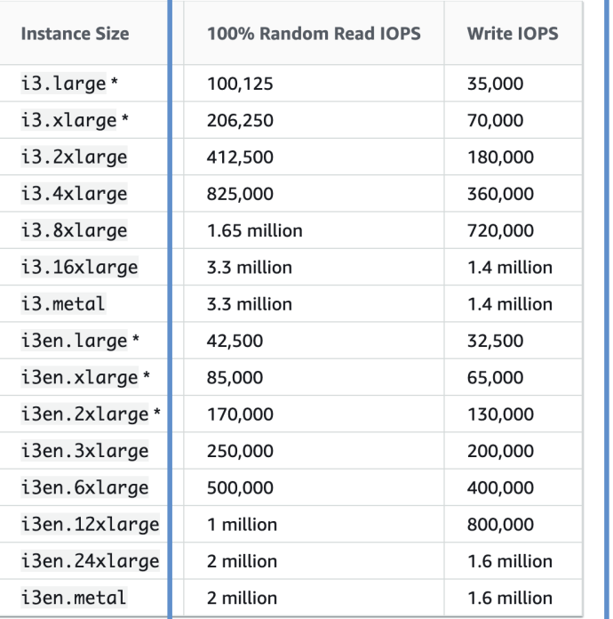

02. EC2 Storage
-
EBS Volume
An EBS (Elastic Block Store) Volume is a network drive you can attach to your instances while they run.- It allows your instances to persist data, even after their termination
- They can only be mounted to one instance at a time (at the CCP level)
- They are bound to a specific availability zone
- Analogy: Think of them as a “network USB stick”
-
Free tier: 30 GB of free EBS storage of type General Purpose (SSD) or Magnetic per month
-
It’s a network drive (i.e. not a physical drive)
- It uses the network to communicate the instance, which means there might be a bit of latency
- It can be detached from an EC2 instance and attached to another one quickly
- It’s locked to an Availability Zone (AZ)
- An EBS Volume in us-east-1a cannot be attached to us-east-1b
- To move a volume across, you first need to snapshot it
- Have a provisioned capacity (size in GBs, and IOPS)
- You get billed for all the provisioned capacity
-
You can increase the capacity of the drive over time
-
EBS – Delete on Termination attribute: Controls the EBS behaviour when an EC2 instance terminates
- By default, the root EBS volume is deleted (attribute enabled)
- By default, any other attached EBS volume is not deleted (attribute disabled)
- This can be controlled by the AWS console / AWS CLI
- Use case: preserve root volume when instance is terminated
-
EBS Snapshots
- Make a backup (snapshot) of your EBS volume at a point in time
- Not necessary to detach volume to do snapshot, but recommended
- Can copy snapshots across AZ or Region
-
EBS Snapshots Features
- EBS Snapshot Archive
- Move a Snapshot to an ”archive tier” that is 75% cheaper
- Takes within 24 to 72 hours for restoring the archive
- Recycle Bin for EBS Snapshots
- Setup rules to retain deleted snapshots so you can recover them after an accidental deletion
- Specify retention (from 1 day to 1 year)
- Fast Snapshot Restore (FSR)
- Force full initialization of snapshot to have no latency on the first use ($$$)
- EBS Snapshot Archive
-
AMI Overview
AMI = Amazon Machine Image- AMI are a customization of an EC2 instance
- You add your own software, configuration, operating system, monitoring…
- Faster boot / configuration time because all your software is pre-packaged
- AMI are built for a specific region (and can be copied across regions)
- You can launch EC2 instances from:
- A Public AMI: AWS provided
- Your own AMI: you make and maintain them yourself
-
An AWS Marketplace AMI: an AMI someone else made
-
AMI Process (from an EC2 instance)
- Start an EC2 instance and customize it
- Stop the instance (for data integrity)
- Build an AMI – this will also create EBS snapshots
- Launch instances from other AMIs
-
EC2 Instance Store
- EBS volumes are network drives with good but “limited” performance
- If you need a high-performance hardware disk, use EC2 Instance Store
- Better I/O performance
- EC2 Instance Store lose their storage if they’re stopped (ephemeral)
- Good for buffer / cache / scratch data / temporary content
- Risk of data loss if hardware fails
- Backups and Replication are your responsibility
-
Local EC2 Instance Store
 -
EBS Volume Types
- EBS Volumes come in 6 types
- gp2 / gp3 (SSD): General purpose SSD volume that balances price and performance for a wide variety of workloads
- io1 / io2 Block Express (SSD): Highest-performance SSD volume for mission-critical low-latency or high-throughput workloads
- st1 (HDD): Low cost HDD volume designed for frequently accessed, throughput- intensive workloads
-
sc1 (HDD): Lowest cost HDD volume designed for less frequently accessed workloads
-
EBS Volumes are characterized in Size | Throughput | IOPS (I/O Ops Per Sec)
- When in doubt always consult the AWS documentation – it’s good!
- Only gp2/gp3 and io1/io2 Block Express can be used as boot volumes
- EBS Volumes come in 6 types
-
EBS Volume Types Use cases
General Purpose SSD- Cost effective storage, low-latency
- System boot volumes, Virtual desktops, Development and test environments
- 1 GiB - 16 TiB
- gp3:
- Baseline of 3,000 IOPS and throughput of 125 MiB/s
- Can increase IOPS up to 16,000 and throughput up to 1000 MiB/s independently
- gp2:
- Small gp2 volumes can burst IOPS to 3,000
- Size of the volume and IOPS are linked, max IOPS is 16,000
- 3 IOPS per GB, means at 5,334 GB we are at the max IOPS
-
EBS Volume Types Use cases
Provisioned IOPS (PIOPS) SSD- Critical business applications with sustained IOPS performance
- Or applications that need more than 16,000 IOPS
- Great for databases workloads (sensitive to storage perf and consistency)
- io1 (4 GiB - 16 TiB):
- Max PIOPS: 64,000 for Nitro EC2 instances & 32,000 for other
- Can increase PIOPS independently from storage size
- io2 Block Express (4 GiB – 64 TiB):
- Sub-millisecond latency
- Max PIOPS: 256,000 with an IOPS:GiB ratio of 1,000:1
- Supports EBS Multi-attach
-
EBS Volume Types Use cases
Hard Disk Drives (HDD)- Cannot be a boot volume
- 125 GiB to 16 TiB
- Throughput Optimized HDD (st1)
- Big Data, Data Warehouses, Log Processing
- Max throughput 500 MiB/s – max IOPS 500
- Cold HDD (sc1):
- For data that is infrequently accessed
- Scenarios where lowest cost is important
- Max throughput 250 MiB/s – max IOPS 250
Don't need to get all details but some top level differences, like which one to use to get the most IOPS at the lowest cost for a specific use case
-
EBS Multi-Attach – io1/io2 family
- Attach the same EBS volume to multiple EC2 instances in the same AZ
- Each instance has full read & write permissions to the high-performance volume
- Use case:
- Achieve higher application availability in clustered Linux applications (ex: Teradata)
- Applications must manage concurrent write operations
- Up to 16 EC2 Instances at a time
- Must use a file system that’s cluster-aware (not XFS, EXT4, etc…)
-
EBS Encryption
- When you create an encrypted EBS volume, you get the following:
- Data at rest is encrypted inside the volume
- All the data in flight moving between the instance and the volume is encrypted
- All snapshots are encrypted
- All volumes created from the snapshot
- Encryption and decryption are handled transparently (you have nothing to do)
- Encryption has a minimal impact on latency
- EBS Encryption leverages keys from KMS (AES-256)
- Copying an unencrypted snapshot allows encryption
- Snapshots of encrypted volumes are encrypted
- When you create an encrypted EBS volume, you get the following:
-
Encryption: encrypt an unencrypted EBS volume
- Create an EBS snapshot of the volume
- Encrypt the EBS snapshot ( using copy )
- Create new ebs volume from the snapshot ( the volume will also be encrypted )
- Now you can attach the encrypted volume to the original instance
-
Amazon EFS – Elastic File System
- Managed NFS (network file system) that can be mounted on many EC2
- EFS works with EC2 instances in multi-AZ
- Highly available, scalable, expensive (3x gp2), pay per use
-
Amazon EFS – Elastic File System
- Use cases: content management, web serving, data sharing, Wordpress
- Uses NFSv4.1 protocol
- Uses security group to control access to EFS
- Compatible with Linux based AMI (not Windows)
- Encryption at rest using KMS
- POSIX file system (~Linux) that has a standard file API
- File system scales automatically, pay-per-use, no capacity planning!
-
EFS – Performance & Storage Classes
- EFS Scale
- 1000s of concurrent NFS clients, 10 GB+ /s throughput
- Grow to Petabyte-scale network file system, automatically
- Performance Mode (set at EFS creation time)
- General Purpose (default) – latency-sensitive use cases (web server, CMS, etc…)
- Max I/O – higher latency, throughput, highly parallel (big data, media processing)
- Throughput Mode
- Bursting – 1 TB = 50MiB/s + burst of up to 100MiB/s
- Provisioned – set your throughput regardless of storage size, ex: 1 GiB/s for 1 TB storage
- Elastic – automatically scales throughput up or down based on your workloads
- Up to 3GiB/s for reads and 1GiB/s for writes
- Used for unpredictable workloads
- EFS Scale
-
EFS – Storage Classes
- Storage Tiers (lifecycle management feature – move file after N days)
- Standard: for frequently accessed files
- Infrequent access (EFS-IA): cost to retrieve files, lower price to store. Enable EFS-IA with a LifecyclePolicy
- Availability and durability
- Standard: Multi-AZ, great for prod
- One Zone: One AZ, great for dev, backup enabled by default, compatible with IA (EFS One Zone-IA)
- Over 90% in cost savings
- Storage Tiers (lifecycle management feature – move file after N days)
-
EBS vs EFS – Elastic Block Storage
- EBS volumes…
- one instance (except multi-attach io1/io2)
- are locked at the Availability Zone (AZ) level
- gp2: IO increases if the disk size increases
- gp3 & io1: can increase IO independently
- To migrate an EBS volume across AZ
- Take a snapshot
- Restore the snapshot to another AZ
- EBS backups use IO and you shouldn’t run them while your application is handling a lot of traffic
- Root EBS Volumes of instances get terminated by default if the EC2 instanc
- EBS volumes…
-
EBS vs EFS – Elastic File System
- Mounting 100s of instances across AZ
- EFS share website files (WordPress)
- Only for Linux Instances (POSIX)
- EFS has a higher price point than EBS
- Can leverage EFS-IA for cost savings
- Remember: EFS vs EBS vs Instance Store